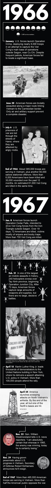

Sometimes the wounded would ask him to pray. For a swift recovery. For their wives or children back home. For the pain to stop.
Others just wanted someone to talk to them. About God, or the weather, or sports. Anything to distract from the thought that they might not survive their tour in Vietnam.
Nothing at seminary had prepared Gordon Paulson for his time here.
He had arrived at the naval hospital in Da Nang on March 9, 1966, a year and a day after the first 3,500 American ground troops landed in country. That figure now surpassed 200,000.
You could tally the cost of this war in different ways: in dollars, or lives. In carnage witnessed in a far-off place. In protests and confrontation back home.
Paulson, who had just turned 35, was the first full-time chaplain at the only military hospital in Vietnam staffed with orthopedic surgeons. It saw the most seriously wounded casualties.
After a few months on the job, Paulson could tell what kind of day he was going to have based on the sound of the rescue helicopters. The faster the choppers approached, the worse the injuries on board.
One Sunday, as he wrapped up the Protestant church service, Paulson heard two helicopters racing toward base. He watched them touch down in front of the emergency room. Workers unloaded the patients and carried them toward the intensive care unit.
He’d never seen stretcher bearers run so fast. Must be some skinny soldiers, he thought. Paulson started to run, too.
He pushed the emergency room door open and froze at the scene.
Four Vietnamese children, their little mouths hanging open, blood bubbling from open chest wounds. Viet Cong mortar attack, he heard someone say.
SPOTIFY
Sounds of 1966 and 1967
By 1966, folk and rock met psychedelia, and the three whirled together into a sound that little resembled the pop of just five years earlier. Artists grew more socially aware and paranoid, yet remained optimistic things could change if "everybody look what's going down." As you read, listen to some of the songs that shaped 1966 and 1967.
Paulson stared at the bleeding children, but all he could think of were his own daughters.
One night, when the staff was gathered in a hut to watch a movie, mortars started falling. Paulson and the others, their shoes off, sprinted across the base, heading for the emergency room. Moments after they made it inside, another round of mortars hit the path they'd taken.
The experience crystallized a truth for the chaplain: Seconds matter, especially in war.

GORDON PAULSON
The 84-year-old spent 30 years in the Navy as a military chaplain before retiring to Norfolk. (Stephen M. Katz photos | The Virginian-Pilot)
One afternoon, choppers dropped off 11 body bags. Paulson and the priest knew the routine. He unzipped one and reached in, feeling for dog tags.

Gordon Paulson served as a chaplain at the Naval Hospital in Da Nang in 1966.
"Catholic," he read aloud. "This one's for you."
Paulson moved on to the next one.
He unzipped the bag, then felt his stomach turn.
This soldier's head had been blown off. Only the jaw remained.
Trembling, he reached for the dog tags.
Every man is entitled to a final prayer.
VIDEO
President Johnson at Princeton, May 1966
At Princeton University for a dedication ceremony, President Lyndon Johnson answers critics of his Vietnam policy during his speech. "We have used our power not willingly and recklessly ever," he says. "But always reluctantly and with restraint."
Leo Tully stepped out of an air-conditioned plane and onto the tarmac in Saigon. Within minutes, his Army uniform was drenched in sweat.
It was June 1966. He was 19, a little more than a year out of high school, one of more than 380,000 men drafted that year.
Tully had trained at Fort Benning, Ga., to be a helicopter door gunner, which seemed a hell of a lot better than slogging through the jungle in an infantry unit like some of his buddies. A few days after he arrived at Camp Alpha outside Saigon, an announcement came over a loudspeaker: “Those with aviation orders, fall out.”

LEO TULLY
Tully, 68, moved to Virginia Beach after retiring from the postal service. He served two years in the Army, deploying once to Vietnam.
The 40 or so fresh-eyed soldiers who matched that description lined up outside the division headquarters. "Gentlemen," an officer said, "your orders have been amended. Welcome to the 1st Infantry Division."
The latest American war strategy - march into enemy territory, kill as many Viet Cong as possible, then count the bodies - required grunts to replace those who had been sent home on stretchers or in caskets. Tully and the others were farmed out to three battalions and dispatched on what had become known as "search and destroy" missions.
The patrols usually went like this: Soldiers would pile into trucks - sometimes helicopters - and travel deep into the wilderness. After hopping out, they'd hump through the jungle. At night, they would dig holes and try to sleep. The next day, they'd fill the holes and start walking again, through air so hot it was hard to breathe.
The patrols went on for days.
Tully says he learned to nap while walking.
One afternoon, the platoon marched out of thick forest and into a field of 8-foot elephant grass. Bullets whizzed out of the brush. Soldiers started falling. Ambush!

Leo Tully on patrol with the 1st Infantry Division north of Saigon in 1966
Tully dropped down on his chest and started firing his M-60 machine gun.
Soon he was the platoon’s only machine gunner who hadn’t been shot. Some soldiers retreated, carrying the wounded on makeshift stretchers made from ponchos strung across shafts of bamboo. Others dug in and fed Tully belts of ammunition. He sprayed a steady line of bullets, about a foot off the ground, to keep anyone from crawling up on them.
The battle lasted about three hours. Dozens from his platoon were killed or wounded before Air Force planes dropped bombs and napalm, allowing the men to set up a perimeter and finally beat back the Viet Cong.
That night, after the adrenaline had faded, Tully crouched in a foxhole. His hands were shaking. His heart beat so hard, he imagined it exploding out of his chest. The next morning, he was back on his feet, marching through the jungle.
He spent 12 months like that. By the end of his tour, he couldn't wait to climb back onto that air conditioned airplane. Tully didn't know it then, but of the 40 soldiers who had been ordered with him into the infantry a year earlier, he was one of just two who served a full year.
All the others had been killed or wounded.
DID YOU KNOW?
U.S. forces sent to Vietnam were the highest educated of all previously deployed armies. Seventy-nine percent had at least a high school degree before entering the service.
Before the draft was suspended in 1973, roughly 25 percent of all young men were called to serve two years of active duty in the Army.
Men who volunteered for the other military branches served longer, but under generally better conditions.
As his plane headed out over the South China Sea, the pilot made an announcement that would become familiar to tens of thousands of servicemen: “Gentlemen, we have officially left the airspace of the Republic of South Vietnam.”
The men cheered.
On his first day back in New Jersey, Tully went to an old hangout to celebrate his homecoming. His friends had told him about an amazing new development in fashion - the miniskirt - and the 20-year-old veteran was eager to see for himself.
A former classmate was there – one of the lucky ones whose draft number hadn’t been called. He’d gone to college instead. He approached Tully, then spit: “Welcome home, baby killer.”
Next thing Tully remembers, a police officer was pulling him off the guy. He had been back one day, and there was blood on his fists.
“Are you looking to go to jail?” the officer said.
Tully shook his head.
All those months trekking through the jungle, not sure who the enemy was or when he might attack. And now, at home, it seemed like the same thing.
Jail didn’t sound so bad.
VIDEO
General Westmoreland, March 1967
General William Westmoreland rehearses a public address, which will explain that the continuation of the bombing campaign in Vietnam (Operation Rolling Thunder) will save American and Vietnamese lives. "I don't want to pay one drop of blood for a pig in a poke," he says.
By the summer of 1967, the bombing campaign in Vietnam – originally planned to last about two months – was stretching into its third year. Operation Rolling Thunder had become the longest sustained air attack in Navy history.
The Norfolk-based aircraft carrier Forrestal had just arrived in the Gulf of Tonkin, loaded with jets to continue the fight. On the evening of July 28, an ammunition ship approached with a delivery.
The Forrestal's ordnance officer was shocked when he reviewed the transfer slip. The shipment included more than two dozen World War II-era bombs. The officer initially refused to accept the ordnance, which for the past three decades had been stored in open-air huts at an ammunition dump in the Philippines.
The Forrestal's captain also balked, but he didn't have much of a choice: The 1,000-pound bombs had been pulled out of storage because the Pentagon hadn't been able to procure ordnance fast enough to keep up with the war's relentless pace. The relics were needed to complete the next day's mission.
What they saw surprised some of the ordnance handlers: The bombs were rusted, still in their original packing crates, now moldy and rotten. Some were stamped with production dates as early as 1935. One sailor later said he noticed a few of the bombs were leaking at the seams, a sign that the explosive filler had degenerated.
He approached Tully, then spit: "Welcome home, baby killer." Next thing Tully remembers, a police officer was pulling him off the guy. He had blood on his fists.
Around 10 that night, Stu Carson, a 24-year-old ordnanceman, took a crew to the hangar deck to prepare the old bombs. They installed fuses, fins and booster charges, then sent the assembled bombs immediately up to the flight deck. Carson didn't notice any leaks, but they had been told, under no circumstances should the bombs be stored below deck.
The following morning, Carson was working five decks below in a magazine when he heard an explosion.
A moment later, a voice crackled over the ship's loudspeaker: "Fire! Fire! Fire on the flight deck! Sound general quarters!"
An electrical glitch had caused a rocket to fire from a jet on the flight deck. It slammed into another jet's fuel tank, igniting a fire.
Normally, fire crews would have had about 10 minutes to extinguish the blaze before conventional bombs got hot enough to explode. But these old bombs were far less stable. Less than two minutes after the fire started, one exploded, blowing a crater in the flight deck and spraying members of the firefighting crew with shrapnel and burning fuel.
The blast was followed by eight more explosions. Burning jet fuel spread through the hangar bay and drained into living quarters below.

In 1967, a missile accidentally fired from a jet aboard the Forrestal. It remains the Navy's worst disaster since World War II. (The Associated Press)
Carson and other sailors, unaware what was happening topside, cleared the second deck of ordnance. Soon, the sailors heard some disturbing radio traffic: The medical bay was beyond capacity.
What had happened up there? Carson wondered.
Months would pass before an internal investigation sorted that out.
This much was known by the end of the day:
More than 160 sailors were wounded.
Another 134 were dead.
VIDEO
Thousands oppose Vietnam War, 1967
A newsreel examines anti-Vietnam War marches in New York, San Francisco and Rome. An estimated 125,000 show up in New York. "Make-up and costumes were bizarre," the narrator says.
November 1967.
Nearly half a million Americans were serving in Vietnam. More than 18,000 had died. Taxes were going up to pay for the effort. And for the first time, more than half of America opposed the war.
A few days before Thanksgiving, President Lyndon B. Johnson summoned Gen. William Westmoreland from Saigon to reassure the public.
Arriving at Andrews Air Force Base, Westmoreland told reporters he was "very, very encouraged" by recent events. Appearing on "Meet the Press," he predicted that American troops would begin withdrawing "within two years or less."
A day later, he rose to speak at the National Press Club in Washington:
“I am absolutely certain that whereas in 1965 the enemy was winning, today he is certainly losing,” Westmoreland said, reading from prepared remarks. “We have reached an important point where the end begins to come into view.”
As the general spoke, the Viet Cong were quietly preparing their response.
Pilot writer Joanne Kimberlin contributed to this report.
Mike Hixenbaugh, 757-446-2949, mike.hixenbaugh@pilotonline.com
ABOUT THE REPORTING
This narrative was constructed based on interviews with veterans, archived newspaper articles, information from the Department of Defense, and Virginian-Pilot research.
Part IV | Crack the sky. Shake the earth.
TIMELINE
(Illustration by Adrian Bohannon | The Virginian-Pilot)